Під час реставрації зубів сенс усіх дій лікаря-стоматолога полягає у тому, щоб штучне мало вигляд природного. Завдяки сучасним інноваційним матеріалам можна вдосконалити усмішку мінімально інвазивними способами. Пряма техніка може виявитися не такою простою, але ми зможемо зберегти здорові тканини і заощадити кошти. А використання інфільтрації дозволяє зменшити ділянки зубів, змінені в кольорі, та ефективніше витрачати невелику кількість композиту.
Ключові слова
пряма реставрація, інфільтрація, дисколорит емалі, мінімально інвазивні техніки лікування.
Abstract
During the teeth restoration, the meaning of all actions of a dentist is to make the artificial look like natural. Thanks to modern innovative materials, we can improve your smile in minimally invasive ways. Direct technique may not be so simple, but we can preserve healthy tissue and save money. And the use of infiltration allows you to reduce areas with discolored teeth and be more effective with a little composite.
Key words
direct restoration, infiltration, enamel discoloration, minimally invasive treatment techniques.
Під’ясенне розташування краю реставрації потрібне в різних клінічних випадках: для маскування неестетичного вигляду натуральних зубів або межі більш опакової реставрації, щоб змінити профіль прорізування зуба і, іноді, збільшити висоту коронок зубів для встановлення реставрації – для досягнення кращої естетики або ретенції.
При плануванні під’ясенної межі буде дуже важливо визначити глибину зубоясенної борозни у пацієнта. Для того, щоб отримати прогнозований та естетичний результат, важливо знати, як саме препарувати зуби і де буде розташований ясенний край.
У повсякденній роботі, майже в кожному випадку, я надаю перевагу такому протоколу:
Проводиться навколоясенна обробка зубів.
Встановлюється перша нитка для ретракції ясенного краю на половину глибини борозни. Так здійснюється вертикальна ретракція.
Переміщується межа препарування із супрагінгівальної зони у навкологінгівальну.
Встановлюється друга нитка для горизонтальної ретракції.
Знімається друга нитка для зняття відбитка.
Клінічний приклад
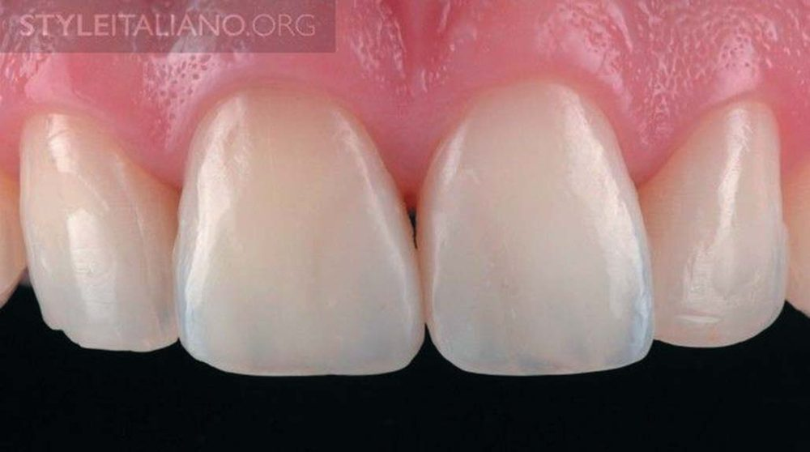
Фото 1. Початкова ситуація. Пацієнт незадоволений тим, що зуб 11 трохи темніший, і вважає, що композитні реставрації виділяються за певних умов освітлення. Композитні реставрації було встановлено рік тому. Ми запропонували надати композиту ще один шанс, але пацієнт відмовився. Тоді, враховуючи високі вимоги цього пацієнта щодо естетики, було вирішено встановити два керамічні вініри.
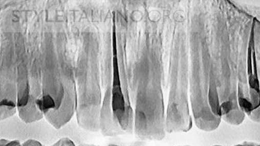
Фото 2. Рентгенограма передніх зубів перед лікуванням.
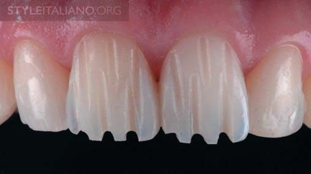
Фото 3. Оскільки не було потреби змінювати пропорції і положення центральних різців, розпочали препарування. Планувалася зміна кольору лише зуба 11. Щоб препарування було менш інвазивним, зроблено орієнтовні пропили.
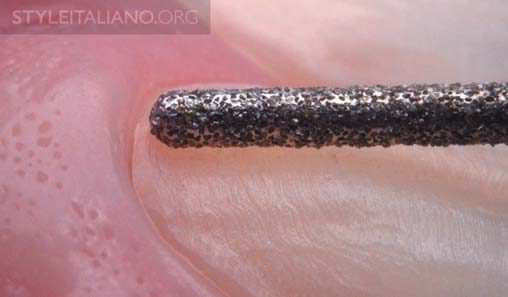
Фото 4. Препарування навколоясенної зони. На першому етапі препаруємо навкологінгівальну зону бором, не використовуючи ретракційну нитку. Безперечно, зараз обов’язковою умовою є здоровий стан навколишніх тканин.
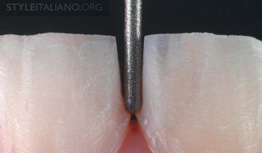
Фото 5. Проксимальне препарування зубів також робиться у навкологінгівальній зоні з урахуванням розташування верхівки сосочка.
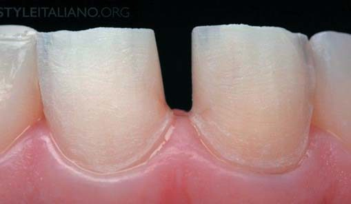
Фото 6. На наступному етапі у зубоясенну борозну було введено нитку для обмеження глибини препарування. Ми дуже уважно стежили за тим, щоб у процесі роботи не порушити біологічну ширину.
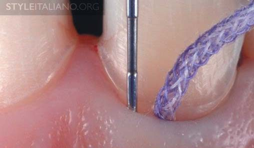
Фото 7. Для ретракції ясен на половину глибини борозни вводиться перша нитка задля забезпечення вертикальної ретракції.
Скільки тканин слід видалити у субгінгівальній зоні? За J. Kois і F. Spear, існують два правила:
Якщо зонд досягає глибини 1,5 мм або менше, пройдіть ще 0,5–0,7 мм під м’якими тканинами.
Якщо зонд досягає глибини понад 1,5 мм, поглиблюйте край препарування у тканини на половину глибини борозни. Якщо глибина борозни дорівнює 1 мм, препаруйте на глибину 0,5 мм, а у разі борозни з глибиною 2 мм препаруйте під яснами на глибину 1 мм.
Отже, відповіддю на запитання «Якою ретракційною ниткою користуватися?» є: тією, що забезпечує ретракцію ясен на відстань половини глибини борозни. Якщо нитка не зміщує край ясен на таку глибину, слід скористатися товщою ниткою.
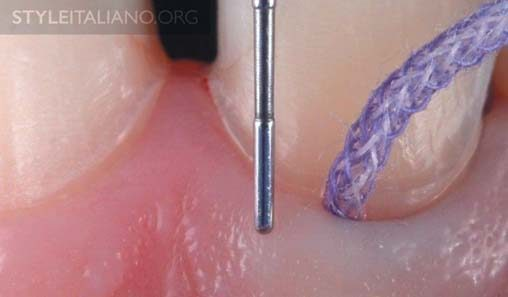
Фото 8. Зазвичай починаємо з #0 Ultrapack, Ultradent. У клінічному випадку, проаналізованому в цій статті, глибина борозни становить 1 мм. На знімку нитка #0 уже встановлена з правого боку зуба, і ми бачимо, що положення ясен зміщене у вертикальному напрямку.
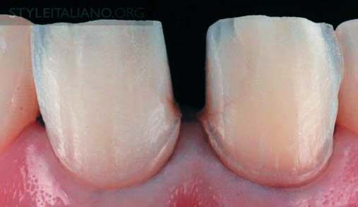
Фото 9. У разі вертикальної ретракції ясен початкова навкологінгівальна обробка стає над’ясенною. Коли ясна зміщуються апікально, препарування меж робиться дуже легко, тому що маємо набагато кращу видимість.
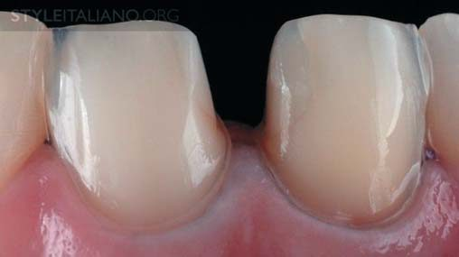
Фото 10. Зміщення межі препарування із супрагінгівального рівня на навкологінгівальний. Перемістити межу препарування на навкологінгівальний рівень можна за допомогою фінішного бору на невеликій швидкості.
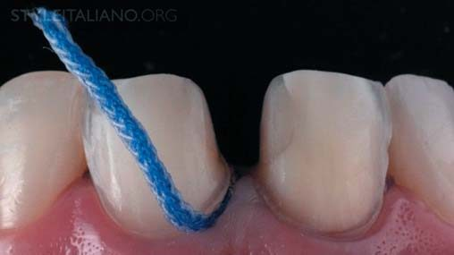
Фото 11. Введено другу нитку для горизонтальної ретракції. Друга нитка потрібна для зняття відбитка. Її вводять для горизонтальної ретракції, щоб створити простір для відбиткового матеріалу.
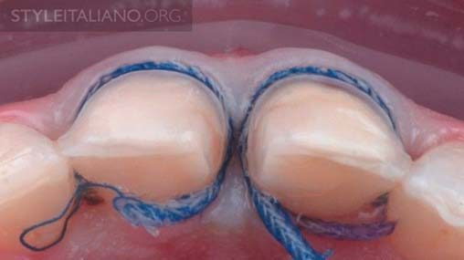
Фото 12. Для гарної горизонтальної ретракції друга нитка має повністю проглядатися з оклюзійного боку. Якщо нитка повністю занурюється у борозну, слід узяти товщу, а якщо деякі зони не видно, тоді потрібно частково встановити третю нитку.
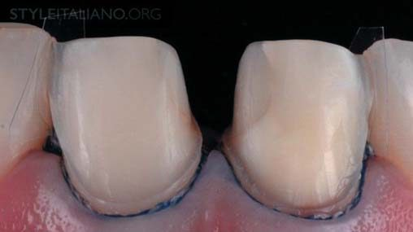
Фото 13. Вигляд підготовлених зубів, коли ми готові зняти відбиток.
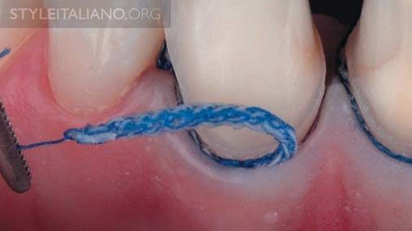
Фото 14. Перед зняттям відбитка другу нитку акуратно видаляємо. Оскільки на цьому етапі не повинно бути кровотечі, користуємося нитками, змоченими в хлориді алюмінію або епінефрині.
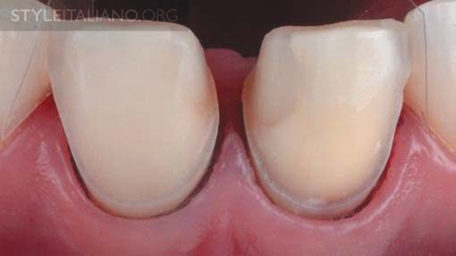
Фото 15. Коли борозна відкрита, можна знімати традиційний силіконовий відбиток або цифровий скан.
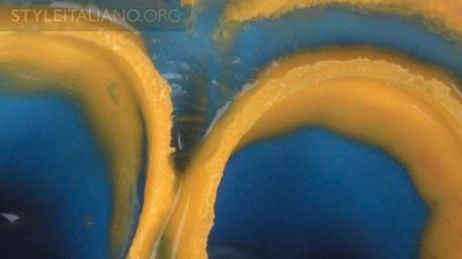
Фото 16. Відбиток знято в одноетапній техніці за допомогою відбиткового матеріалу Honigum (DMG).
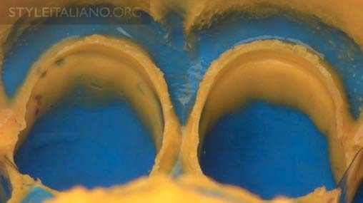
Фото 17. Цей якісний матеріал успішно впорався з реєстрацією як борозни, так і межі препарування.
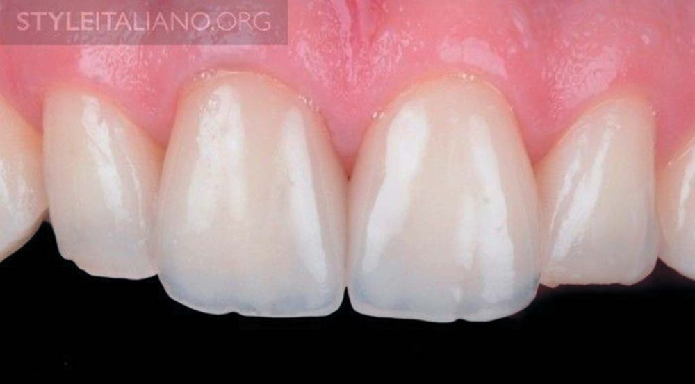
Фото 18. Кінцевий результат установлення керамічних вінірів E.max через 20 місяців після фіксації цементом. Їх виготовив зубний технік найвищої категорії Florin Stoboran (Румунія).
Висновки
Щоб контролювати межі препарування, слід препарувати зуби, коли пародонт здоровий. Завжди вимірюйте глибину зубоясенної борозни перед препаруванням субгінгівальної зони.
Перша нитка потрібна для вертикальної ретракції і препарування, друга – для горизонтальної ретракції і зняття відбитка. Такий підхід дозволить стоматологові отримувати прогнозований результат.
Практичні курси естетичної реставрації зубів у Навчальному центрі «Аполлонія»